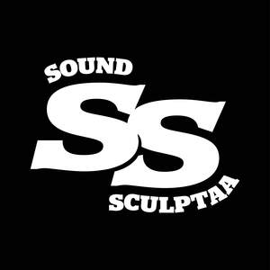

Trade Mark Journal No.2026/005 30 January 2026
UK00004323835 14 January 2026 (41)

- Class 41
- Production of music; Music production; Production of music concerts; Production of music shows; Music production services; Production of sound and music recordings; Production of musical videos; Production of musical recordings; Consultancy on film and music production; Production of audio entertainment; Production of musical works in a recording studio; Audio production; Radio entertainment production; Theatre production; Music publishing and music recording services; Production of entertainment in the form of sound recordings; Theater production; Production of audiovisual recordings; Production of video recordings; Production of audio-visual recordings; Video production; Audio recording and production; Recording of music; Music recording; Production of audio recordings; Production of sound recordings; Performance of music; Production of sound and video recordings; Film production; Music recording studio services; Production of theatrical performances; Music performances; Production of educational sound and video recordings; Audio recording and production services; Production of videos; Production of animation; Production of podcasts; Video film production; Production of live entertainment; Production of video films; Audio and video production, and photography; Theatre production services; Production of audio programs; Performance of dance, music and drama; Film production services; Television production; Theater production services; Production of documentaries; Production of video and audio recordings; Production of operas; Production of films; Theatrical production services; Audio production services; Production of video cassettes; Production of theatrical shows; Audio, video and multimedia production, and photography; Film production for entertainment purposes; Production of entertainment in the form of video tapes; Services for the production of entertainment in the form of film; Production of cabarets; Production of pre-recorded cinema films; Production of plays; Performance of music and singing; Production of audio master recordings; Recording studio services for the production of sound bearing discs; Production of video and/or sound recordings; Production of pre-recorded video films; Music mixing services; Radio production services; Television, radio and film production; Production of film studies; Music composition services; Video production services; Production of audio tapes for entertainment purposes; Production of live performances; Post-production editing services in the field of music, videos and film; Music publishing; Publishing of music; Production of entertainment shows featuring singers; Production of stage performances; Production of films in studios; Animation production services; Production of entertainment shows featuring instrumentalists; Artistic management of music venues; Music festival services; Services for the production of entertainment in the form of video; Music performance services; Production of cinematographic films; Production of entertainment shows featuring dancers; Production of live entertainment events; Production of comedy shows; Film production, other than advertising films; Production of shows; Shows (Production of -); Live music performances.
Keenen Williams